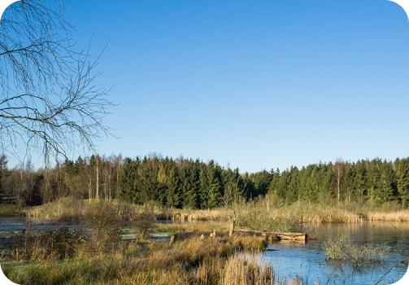
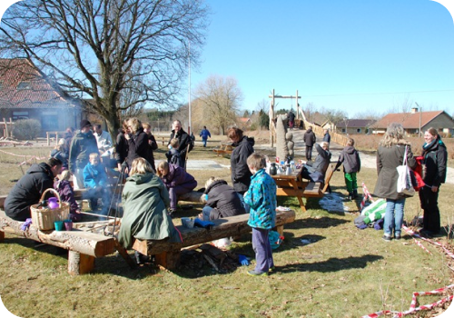

Verninge og omegn
Trivsel og udvikling er centralt hos Verninges skoler og dagtilbud
Dagtilbud og skoler I Verninge og omegn
I Verninge vægter vi børns trivsel højt. I Lilla Gruppe introduceres skolelivet gennem skræddersyede aktiviteter, mens Fuglekilden og børnehaven styrker selvværd og udvikler sociale, selvstændige og kreative færdigheder. Naturlig forståelse og alderssvarende motorik og sprog er essentielle.
Overgangen fra dagtilbud til skole understøttes af Projekt Skolestart. Lilla Gruppe har deres egne lokaler og oplever en dag om ugen som "skoledag". Dette sikrer, at børnene føler sig fortrolige med skolens faciliteter og personalet.
Elektronisk skoleindskrivning i november gør processen let for forældre til kommende skolebørn. Vi inviterer også til informationsmøder om skolestart, hvor spørgsmål og bekymringer kan blive besvaret. Hos os stræber vi efter at skabe en glidende overgang, så børnene er glade og parate til at begynde deres skole- og læringsrejse!

Et rigt foreningsliv styrker fællesskab og fremmer børns udvikling
Verninge har et bredt udvalg af aktive foreninger
Foreningerne i Verninge spiller en afgørende rolle i børns udvikling ved at tilbyde berigende aktiviteter og fællesskab. Gymnastikforeningen fremmer motoriske færdigheder og sundhed, mens Idrætsforeningen dyrker teamwork og konkurrence.
Spejderne stimulerer naturelskere og lærer vigtige overlevelsesfærdigheder. Kulturelle foreninger som Husflid og Kirken giver børn kreative udfoldelsesmuligheder og forståelse for traditioner. Gennem disse foreninger opbygger børn sociale kompetencer, selvstændighed og ansvarsfølelse.
Aktiv deltagelse i Verninges mangfoldige foreningsliv skaber en solid grund for børns trivsel og udvikling, samtidig med at det fremmer et sundt og berigende lokalsamfund.
Lokale foreninger

Smuk natur og frisk luft giver øget trivsel
Naturen i Verninge er en perle, der beriger både sjæl og krop.
Verninge charmerer med naturskønne områder som Åsemosen og Verninge Mose, der skaber et idyllisk landskab med enge og vandløb.
Disse områder beriger ikke kun med visuel skønhed, men fremmer også sundhed og trivsel.
Naturen er hjertet i Verninge, styrker fællesskabet og bæredygtigheden, og inviterer til refleksion og ro.
Landsbyparken i Verninge er et stolt varetegn og et levende samlingspunkt.
Verninge Park, skabt af lokale frivillige i 2012 og drevet af Borgerforeningen for Verninge og Omegn, er et pulserende samlingspunkt for leg, motion og socialt samvær.
Midt på plænen står et imponerende egetræ, parkens hjerte, omgivet af mindre oaser med faciliteter.
Parken er åben for alle, men visse tidspunkter kan være forbeholdt Landsbyordningen og lokale arrangementer, som oplyses i kalenderen.
Eventuelle fejl og mangler til henvendes til Borgerforeningens formand, Henrik Jørgensen, for at sikre dens vedligeholdelse og trivse
